Contents
close all
clear all
Questions
Problem Statement
Assumptions
Constants
g = 9.81;
C_D = 0.24;
A = 2.4;
mu = 0.005;
massCar = 2108;
etaGears = 0.95;
etaMotor = 0.9;
eta = etaMotor*etaGears;
passengers = 2;
passengerMass = 80;
massPassengers = passengers*passengerMass;
mass = massCar + massPassengers;
psi = 0;
Cbat = 81;
Cbat = 1000*Cbat;
Voc = 375;
Rin = 1;
k = 1.12;
Data
data = importdata('SFUDS_Data.mat');
Analysis
v = data(:,2);
figure
plot(v)
v = (1/3600)*(1000)*v;
v = repmat(v,10000,1);
time = transpose(1:1:length(v));
a = diff(v(:));
a = [0;a];
FteVec = [];
PVec = [];
PMotorVec = [];
PBatVec = [];
PteVec = [];
QVec = [];
VVec = [];
iVec = [];
dVec = [];
Qoc = Cbat/Voc;
Q = Qoc;
V = Voc;
t = 0;
d = 0;
while (Q > 0)
t = t + 1;
Fte = mass*g*(mu + psi + (1.05*a(t))/g) + 0.626*A*C_D*(v(t)^2);
Pte = Fte*v(t);
Photel = 0.1*Pte;
if (Pte == 0)
i = 0;
Pbat1 = 0;
Pbat = 0;
elseif (Pte > 0)
Pbat1 = Pte/eta + Photel;
Pbat = (1/0.75)*Pbat1;
i = (V - sqrt((V^2) - 4*Rin*Pbat)) / (2*Rin);
else
Pbat1 = eta*Pte + Photel;
Pbat = (1/0.75)*Pbat1;
i = (-V + sqrt((V^2) - 8*Rin*Pbat)) / (4*Rin);
end
if(Pte > 0)
Q = Q - i/3600;
else
Q = Q + (i^k)/3600;
end
d = d + v(t);
dischargeSlope = (3.5/3.8 - 1);
discharge = 1 - (Q/Qoc);
V = Voc*(1 + discharge*dischargeSlope);
FteVec(t) = Fte;
PVec(t) = Pte;
VVec(t) = V;
QVec(t) = Q;
iVec(t) = i;
dVec(t) = d;
PbatVec(t) = Pbat;
PMotorVec(t) = Pbat1;
PteVec(t) = Pte;
end
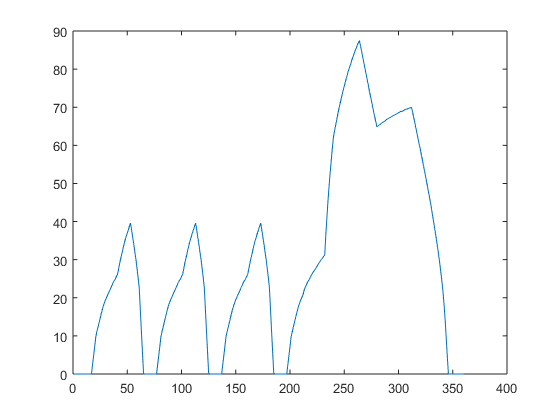
Plots
figure
plot(time,v);
title('Data - Velocity vs Time');
xlabel('time(s)');
ylabel('velocity(m/s)');
figure
plot(time,a);
title('Data - Acceleration vs Time');
xlabel('time(s)');
ylabel('acceleration(m/s^2)');
figure
plot(time(1:length(dVec)),dVec);
title('Calculated - Distance vs Time');
xlabel('time(s)');
ylabel('Distance(m)');
figure
plot(time(1:length(FteVec)),FteVec);
title('Calculated - Fte vs Time');
xlabel('time(s)');
ylabel('Force(N)');
figure
plot(time(1:length(QVec)),QVec);
title('Calculated - Q vs Time');
xlabel('time(s)');
ylabel('Charge(Amp hour)');
figure
plot(time(1:length(iVec)),iVec);
title('Calculated - Battery Current vs Time');
xlabel('time(s)');
ylabel('Current(Amp)');
figure
plot(time(1:length(VVec)),VVec);
title('Calculated - V vs Time');
xlabel('time(s)');
ylabel('Voltage(V)');
Warning: Imaginary parts of complex X and/or Y arguments ignored
Warning: Imaginary parts of complex X and/or Y arguments ignored
Warning: Imaginary parts of complex X and/or Y arguments ignored
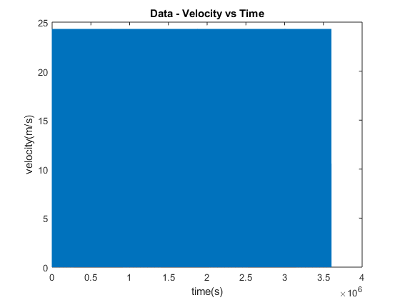 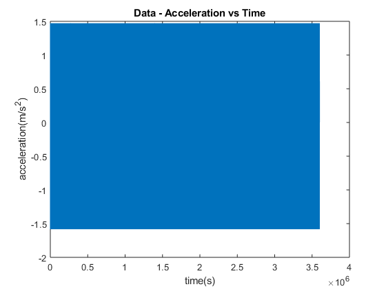 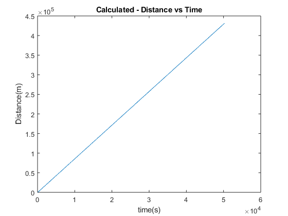

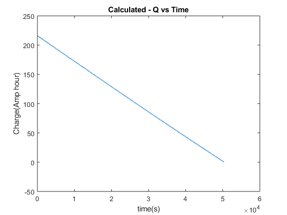 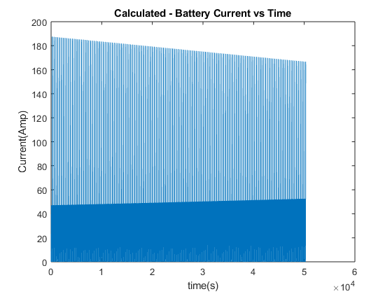 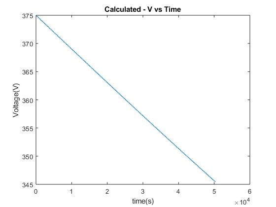
Test Point Plots
figure
plot(time(1:length(data)), v(1:length(data)), time(1:length(data)), a(1:length(data)));
title('TP1 - V and A vs Time');
xlabel('time(s)');
ylabel('Velocity(m/sec), Acceleration(m/sec^2');
figure
plot(time(1:length(data)), PteVec(1:length(data)));
title('TP2 - Power to Move Car');
xlabel('time(s)');
ylabel('Power(W)');
figure
plot(time(1:length(data)), PMotorVec(1:length(data)));
title('TP3 - Power From Motor');
xlabel('time(s)');
ylabel('Power(W)');
figure
plot(time(1:length(data)), PbatVec(1:length(data)));
title('TP4 - Power From Battery');
xlabel('time(s)');
ylabel('Power(W)');
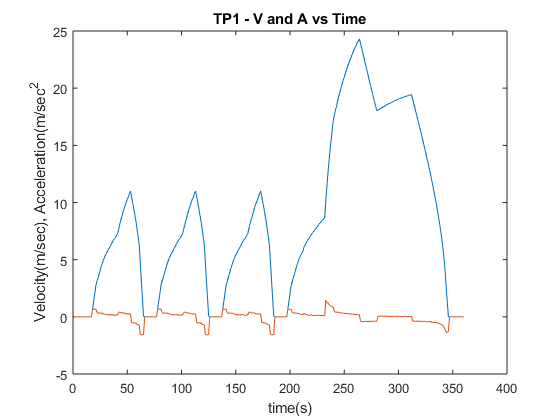 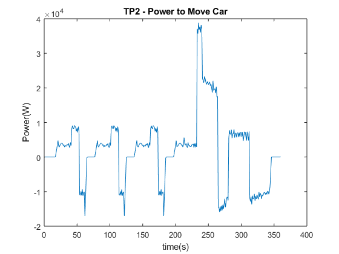 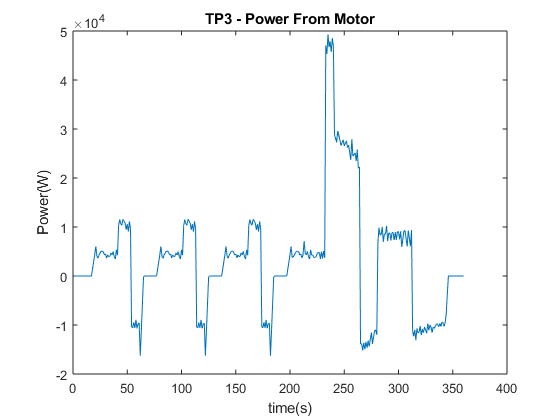 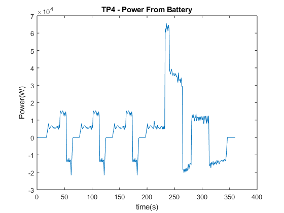